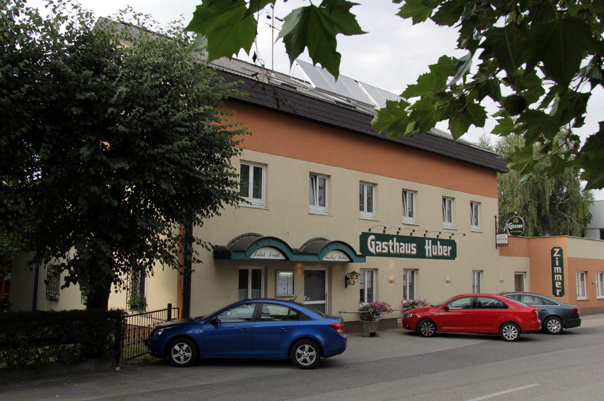

Wir freuen uns über Ihre Anfrage
Gasthof Huber, Wiesenstraße 69, 4600 Wels. Telefonisch erreichen Sie uns unter +43 7242 45030, schriftlich über das Formular oder per E-Mail.
So erreichen Sie uns
Wiesenstraße 69, 4600 Wels, Österreich
- Telefon+43 7242 45030
- Fax+43 7242 45030 30
- E-Mailoffice@gasthaus-huber.at
Keine E-Mail-Verschleierung, kein „JavaScript einschalten“: Die Adresse steht offen da und ist auf jedem Gerät anklickbar.
- Montag bis Freitag09:00–24:00 Uhr
- Warme Küche11:00–14:00 & 17:00–21:00
- Samstag, Sonntag, Feiertaggeschlossen
- ZimmervermietungMontag bis Sonntag
Betriebsurlaub: Restaurantbetrieb von 27. Juli bis 17. August 2026 geschlossen.
Skizze, nicht maßstabsgetreu. Gratis Parkplätze direkt beim Haus, dazu eine Fahrrad-Garage.

Schreiben Sie uns
Fragen zu Zimmern, Feiern, Tagesmenü oder Gutscheinen? Wir antworten so rasch es der Betrieb zulässt.
Für Reservierungen gibt es eigene Formulare: Tisch, Zimmer und Gutschein.
Initiativbewerbung
Küche, Service, Zimmer: Wer in einem Familienbetrieb in Wels arbeiten möchte, kann sich jederzeit vorstellen – auch ohne ausgeschriebene Stelle.
Schreiben Sie kurz, was Sie können und wann Sie Zeit haben. Wir melden uns.
Tagesmenüs per Mail
Bekommen Sie automatisch die aktuellen Tagesmenüs und Infos aus dem Haus.